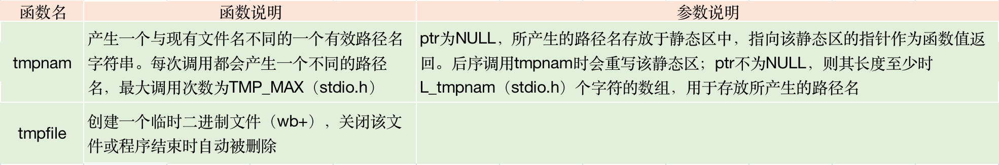

Unix-标准IO库
流
以前提到的 IO 函数都是围绕文件描述符的。对文件的读写等操作都是基于文件描述符的。而标准 IO 库的操作是围绕流的。当使用标准 IO 库打开或创建一个文件时，流与该文件就相互关联了起来。
流的定向
- 不同字符集，单个字符可能占用一个字节也可能占用两个字节（宽字符集）。流的定向决定了所读写的字符是单字节还是多字节的。
- 刚创建的流是没有定向的。
- 在未定向的流上使用多字节 IO 函数（见 wchar.h），则流的定向就被设置为宽定向的；
- 在为定向的流上使用单字节 IO 函数，则流的定向为字节定向。
- 流定向的改变：freopen() 清除一个流定向；fwide() 设置流定向。
参数说明：
| mode 参数 | 函数作用 | |
|---|---|---|
| 为负 | 设置流定向为字节定向 | |
| 为正 | 设置流定向为宽定向 | |
| 为 0 | 不设置流定向，但返回标识该流定向的值 | |
函数说明：
- fwide 不能改变已定向流的定向
- 无出错返回。调用 fwide 前先清除 errno，从 fwide 返回时检查 errno 的值。通过此方式看 fwide 是否出错。
缓冲
函数 setbuf(), setvbuf()
更改缓冲类型
函数说明：
在流已被打开之后执行任何一个操作之前调用
函数fflush()
此函数使该流所有未写的数据都被传送至内核。作为一个特殊情况，若 fp 为 Null，则此函数将导致所有输出流被冲洗。
打开流
函数说明：
freopen：在指定的流上打开指定的文件。若流已经打开，则先关闭该流。若该流已定向，则清除该定向。此函数一般将一个指定的文件打开为一个预定义流：标准输入、标准输出、标准错误
fdopen：将一个标准 IO 流与指定的文件描述符相结合。常用于由创建管道函数和网络通信通道函数返回的描述符。因为这类特殊类型文件不能用标准 IO 函数 fopen 打开。
参数说明：
- 字符 b 表示二进制文件。在 UNIX 环境下内核并不区分二进制文件和文本文件。因此 b 字符实现上无作用
- 对于 fdopen 而言并不截断文件，文件截断由打开该描述符的函数来决定（如 open O_TRUNC 标志）；同时也不能在追加时创建该文件，因为既然由文件描述符了，该文件肯定是存在的。
- 多个进程正确地并发追加写入同一文件。
不同打开方式的一些限制：
- type中存在+(读写)时：
若中间没有 fflush、fseek、fsetpos 或 rewind 时，在输出的后面不能直接跟随输入。
若中间没有 fseek、fsetpos 或 rewind 或输入操作没有到达文件末尾时，在输入操作之后不能直接跟随输出。 - 在以 w 或 a 创建新文件时，无法说明该文件的访问权限位。但可通过调整 umask 来实现此功能。
- 若流引用终端设备，则流是行缓冲的，除此之外都是全缓冲(系统默认)的
- 只能在对流执行操作之前调用 setbuf 或 setvbuf 改变缓冲的类型。
函数 fclose()
函数说明：
关闭一个打开的流。
读流和写流
对流读写操作的种类：
- 每次一个字符的 IO
- 每次一行的 IO。如 fgets（调用时应说明最大行长）和 fputs，每行都以一个换行符终止。
- 直接 IO。如 fread 和 fwrite 函数，每次读写某种数量的对象，且每个对象具有指定的长度。常用于从二进制文件中每次读写一个结构。因此又称为二进制 IO、一次一个对象 IO、面向记录的 IO、面向结构的 IO
能够实现为宏的函数与不能实现为宏的函数之间的区别：
- 可实现为宏的函数的参数不应当是具有副作用的表达式。因为它可能会被计算多次。
- 不能实现为宏的函数，可以获取其地址。因此允许函数地址作为一个参数传送给另一个函数
- 调用函数所需的时间通常长于调用宏
函数说明：
- getchar 等同于 getc(stdin)
- getc 可以实现为宏，fgetc 不能实现为宏
- 不管是出错还是到达文件末尾都返回 EOF，可以通过调用 ferror() 或 feof() 进行判断
clearerr() 函数说明：
大多数实现中，为每个流在 FILE 对象中维护了两个标志：
- 出错标志
- 文件结束标志。调用 clearerr 可以清除这两个标志。
函数说明：
在从流中读取数据以后，ungetc 可以将字符再压送回流中（写回标准 IO 库的流缓冲区中）
函数说明：
putchar(c) 等同于 putc(c, stdout) 。putc 可被实现为宏，fputc 不能实现为宏。
每次一行IO
函数说明：（输入）
函数说明：（输出）
- fputs 将一个以 null 字节终止的字符串写到指定的流，尾端的终止符 null 不写出。
- puts 将一个以 null 字节终止的字符串写到标准输出，终止符不写出。但是随后会写一个换行符到标准输出中。不推荐使用。
二进制IO
参数说明：
ptr 存储读取的数据或者写入的数据源
size 每个元素的长度
nobj 元素的个数
函数应用：

关于fread的返回值：
当出错或者到达文件末尾时，返回值都可能会小于 nobj，这种情况应调用 ferror 或 feof 来进行判断。
定位流
函数说明：
fgetpos 将文件位置指示器的当前值存入由 pos 指向的对象中
fsetpos 将流重新定位至 pos 指定的位置
格式化IO
格式化输出：
变体形式仅将可变参数列表变为了 va_list

格式控制：
flag 参数说明：
fldwidth：
最小字段宽度。转换后参数字符数若小于宽度，则多余字符位置用空格填充。字段宽度是一个非负十进制数，或是一个星号
procision：
说明整形转换后最少输出数字位数、浮点数转换后小数点后的最少位数、字符串转换后最大字节数。格式为：“.[可选的非负十进制数 | 星号]”
lenmodifier：
说明参数长度
convtype：
控制如何解释参数
格式化输入：
输入函数的变体形式：

格式控制：
* ：忽略当前输入项
fldwidth：最大字符数。
lenmodifier：说明要用转换结果赋值的参数大小
convtype：基本同 printf 族。差别是：输入中带符号的可赋予无符号类型。如输入流中的 -1 可被转换成 4294967295 赋予无符号整形变量
m：负值分配符。可用于%c、%s、%[ 转换符，迫使内存缓冲区分配空间以接纳转换字符串。这是参数必须是指针地址，分配的缓冲区地址必须复制给该指针。
函数 fileno()
函数说明：
根据流获取对应的文件描述符。
临时文件

内存流
参数说明：
buf 用于内存流的缓冲区。若为空，则分配 size 字节数的缓冲区（流关闭时缓冲区自动被释放）
size 制定了额缓冲区大小的字节数
type 参数对应于基于文件的标准 IO 流的 type 参数取值。但又有区别：
区别 1

区别2:
buf 参数为 NULL 时，缓冲区由 fmemopen 分配，这样就不能得到缓冲区的地址，只写意味着无法读取写入的数据；同样以读的方式打开意味着无法写入缓冲区。因此在 buf 为 NULL 时，打开流进行读写都没有任何意义。- 区别3:
任何时候需要增加流缓冲区中的数据量以及调用 fclose、fflush、fseek、fseeko、fsetpos 时都会在当前位置写入一个null字节。
从上述例子可以看出 flush、fseek自动添加null，fclose 不会添加。